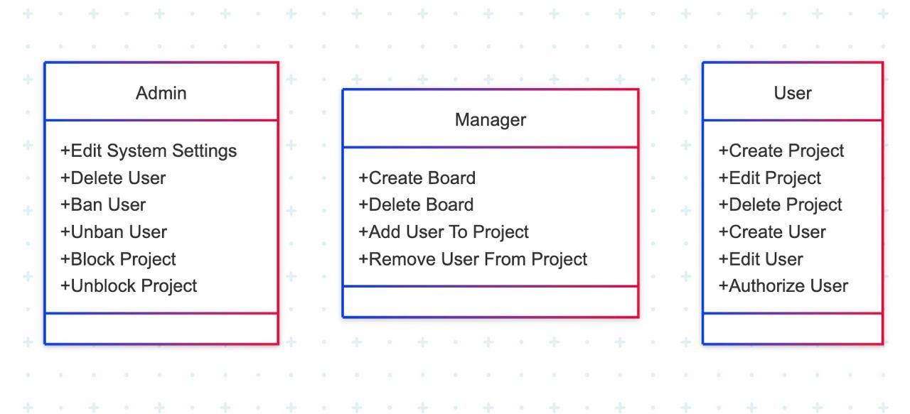

🗂️ Моделі прецедентів
Загальна схема 📊

📝 Основні визначення
- Проєкт: Сукупність моделей, проєктна конструкторська документація, яка містить проєктні рішення і дає повне уявлення про будову розроблюваного виробу, процесу або організації.
- Система управління проєктами: Сукупність процесів, інструментів, методів, методологій, ресурсів і процедур з управління проєктом. Система документується в плані управління проєктами, і її зміст може відрізнятися в залежності від галузі застосування, організаційного впливу, складності проєкту і доступності наявних систем.
- Життєвий цикл проєкту: Набір, зазвичай, послідовних фаз проєкту, кількість і склад яких визначається потребами управління проєктом організації або організаціями, які беруть участь в проєкті. Життєвий цикл можна документувати за допомогою методології.
- Програмне забезпечення: Сукупність програм, необхідних для виконання всіх основних і додаткових функцій системи, які зберігаються в пам'яті та/або в програмувальних електронних пристроях, що входять до складу цієї системи, а також програм на зовнішніх носіях і програмної документації.
- Вимоги до програмного забезпечення: Сукупність тверджень щодо атрибутів, властивостей або якостей програмної системи, що підлягає реалізації.
- Артефакт: Окремий шмат інформації, що використовується чи з'являється в процесі розробки програмного забезпечення. Це може бути файл з кодом, модель, частина документації, чи повідомлення електронної пошти або навіть нотатка, приклеєна до монітора.
- Agile Model: Ітеративна модель розробки, у якій програмне забезпечення створюють інкрементально від самого початку проєкту, на відміну від каскадних моделей, де код доставляють наприкінці робочого циклу.
- Scrum: Це специфічна структура в рамках ширших методів Agile. Це потужний інструмент для керування складними проєктами зі змінними вимогами, що пропонує численні переваги у співпраці, гнучкості та задоволеності клієнтів.
- Spiral Model: Це ризик-орієнтована модель процесу розробки програмного забезпечення. Спираючись на унікальні моделі ризиків конкретного проекту, спіральна модель спрямовує команду на прийняття елементів однієї або декількох моделей процесу, таких як інкрементне, водоспадне або еволюційне прототипування.
- Incremental Model: Модель життєвого циклу розробки, в якій проект поділено на серію прирощень, кожна з яких додає частину функціональності у загальних вимогах проекту.
- Kanban: Це гнучкий метод еволюційного управління змінами в проектах. Це означає, що існуючий процес вдосконалюється невеликими кроками (еволюційно). У підсумку, роблячи багато невеликих змін (а не одне велике), ми зменшуємо ризики для всього проекту в цілому.
- Kanban-board: Це інструмент управління проєктами, візуалізація завдань, які необхідно виконати різним працівникам/підрозділам вашої компанії.
💡 Методи та етапи вирішення завдань
Процес створення програмного забезпечення зазвичай складається з кількох основних етапів. Хоча методи можуть варіюватися, загальна схема залишається незмінною:
- Аналіз вимог: вивчення ідеї замовника та дослідження потреб кінцевих користувачів. На цьому етапі визначаються основні функції, які повинна виконувати система.
- Проєктування: розробка структури майбутнього продукту, створення прототипів і формування плану завдань. Оформлюється логіка продукту, визначаються елементи інтерфейсу та дизайн.
- Розробка: програмування, інтеграція всіх компонентів і налаштування функціональності. Команда розробників і дизайнерів працює над реалізацією концепції продукту.
- Документування: підготовка технічної документації для розробників і супровідних матеріалів для користувачів, що описують функціональність і принципи роботи продукту.
- Тестування: перевірка коректності роботи системи, виявлення і виправлення помилок. Це важливий етап для забезпечення якості програмного продукту.
- Впровадження і підтримка: запуск програмного продукту і забезпечення його стабільної роботи. Забезпечується технічна підтримка користувачів та усунення проблем, що виникають в процесі експлуатації.
Ці етапи є основою процесу створення програмного продукту, що відповідає вимогам і забезпечує його ефективність для користувачів.
🚰 Методології
🌊 Методологія Waterfall
Методологія Waterfall (водоспад) передбачає чітке планування етапів, де кожна фаза завершена до початку наступної. Цей підхід ідеально підходить для проєктів з чітко визначеними вимогами, де зміни після старту проекту мінімальні. Прогрес проходить поетапно, що дозволяє зменшити можливі ризики на кожному етапі розробки.

⚡ Методологія Agile
Agile дозволяє розробляти програмне забезпечення за допомогою ітерацій, що дає можливість швидко адаптуватися до змін. Гнучкість і швидка реакція на нові вимоги від замовника роблять цю методологію популярною в індустрії програмного забезпечення, де постійно змінюються умови та потреби.

📦 Методологія Kanban
Kanban зосереджується на візуалізації процесів і поступовому вдосконаленні кожного етапу за допомогою малих змін. Візуалізація завдань на дошці допомагає зберігати фокус на пріоритетах, що дозволяє ефективно керувати робочим процесом і зменшувати затримки.
:max_bytes(150000):strip_icc():format(webp)/kanban.asp-FINAL-1d12162ec5e14cea9d5862bae096895d.png)
🍃 Методологія Lean
LEAN фокусується на максимальному задоволенні потреб споживачів при мінімальних витратах. Вона оптимізує процеси для зменшення зайвих витрат і підвищення ефективності всього потоку робіт, що допомагає компаніям досягати кращих результатів з меншими ресурсами.

🚀 Методологія Scrum
Scrum зосереджується на коротких циклах роботи, відомих як спринти, що дозволяє швидко адаптуватися до змін і впроваджувати нові функціональності. Це робить Scrum ідеальним для команд, які працюють у швидко змінюваному середовищі, де важлива швидка реакція на потреби користувачів.

🔨 Методологія Incremental
Інкрементний підхід дозволяє поетапно розвивати продукт, кожен етап якого додає нові функції. Це дозволяє зменшити ризики, оскільки з кожним новим прирощенням продукт стає більш функціональним, і команда отримує зворотний зв'язок на ранніх етапах.

🔄 Методологія Iterative
Ітеративний підхід передбачає постійне вдосконалення продукту через кілька циклів розробки, кожен з яких враховує відгуки користувачів. Це дозволяє пристосовуватися до змін у вимогах і покращувати продукт після кожної ітерації.

🌀 Методологія Spiral
Спіральна модель поєднує переваги ітераційного підходу і глибокого аналізу ризиків. Ця методологія дозволяє кожен цикл оцінювати і коригувати, що мінімізує ризики при великій складності проекту.

🔺 Методологія V-Model
V-Model фокусується на тестуванні на кожному етапі розробки, що дозволяє забезпечити високу якість продукту. Для кожної фази розробки є відповідна фаза тестування, що гарантує сумісність і коректність роботи програмного забезпечення.

⚙️ Методологія DevOps
DevOps поєднує розробку і ІТ-операції для покращення швидкості розробки та якості продукту. Це дозволяє прискорити цикл розробки, одночасно підвищуючи безпеку і стабільність продуктів.

⚡ Методологія RAD
RAD фокусується на швидкому прототипуванні, що дозволяє оперативно отримувати відгуки від користувачів і вносити зміни в продукт. Це дозволяє розробникам оперативно адаптувати систему до потреб клієнтів.

🎮 Методологія MVC
MVC дозволяє розділяти програму на три основні компоненти: модель, вигляд і контролер. Така структура дозволяє спростити підтримку програмного забезпечення і покращити організацію коду.

🔁 Методологія CI/CD
CI/CD забезпечує безперервну інтеграцію та доставку змін, що дозволяє зменшити час на випуск нових функцій і забезпечити швидку адаптацію до змін у вимогах.
⚖️ Порівняльна характеристика доступних інструментів для управління проєктами
🌍 Огляд інструментів
GitHub Projects
GitHub Projects — це потужна платформа для командної роботи, спеціально розроблена для спільної розробки програмного забезпечення. Вона інтегрується з Git, що дає змогу відслідковувати зміни в коді, а також використовувати систему управління версіями. Цей інструмент дозволяє ефективно координувати колективну роботу, зберігаючи все під контролем.
Asana
Asana — це багатофункціональна платформа для управління проєктами, що дозволяє організувати робочі процеси, відстежувати прогрес команди та сприяти досягненню високих результатів. Вона підтримує гнучкість при плануванні завдань і дозволяє налаштовувати таймлайни для різних етапів проєкту.
Trello
Trello — це простий і зручний інструмент для управління завданнями за допомогою Канбан-методології. Він ідеально підходить для малих команд і стартапів завдяки своєму мінімалістичному дизайну і можливості автоматизації процесів.
Miro
Miro — це інструмент для спільної роботи, який використовує візуальні дошки для генерації ідей, планування та дизайну проєктів. Відмінно підходить для креативних ідей та брейнстормінгу, дозволяючи працювати разом навіть при відстані.
Jira
Jira — популярний інструмент для управління проектами, що спеціалізується на методологіях Agile. Вона дозволяє організовувати роботу команд за допомогою спринтів і відстеження завдань, що особливо важливо для складних проєктів із змінними вимогами.
Notion
Notion — це універсальна платформа для організації роботи та управління знаннями. Вона поєднує в собі бази даних, дошки Канбан і нотатки, дозволяючи легко інтегрувати дані й організувати все в одному місці.
Basecamp
Basecamp — це зручний інструмент для управління проєктами, який дозволяє командам співпрацювати за допомогою повідомлень, календарів і списків завдань. Його основна перевага — простота у використанні, що робить його популярним для невеликих команд.
📊 Порівняльна таблиця
| Сервіс | Основні можливості | Тип управління | Інтеграції | Особливості | Недоліки |
|---|---|---|---|---|---|
| GitHub Projects | Управління завданнями, Kanban-дошка, відстеження змін у коді | Kanban, Agile | GitHub, CI/CD, Slack | Глибока інтеграція з GitHub | Не підходить для нетехнічних команд |
| Asana | Управління задачами, проєктами, таймлайн, пріоритети | Agile, Scrum | Slack, Google Drive, Zoom | Гнучкість у керуванні задачами | Висока вартість преміум-функцій |
| Trello | Kanban-дошка, чек-листи, теги, автоматизація | Kanban | Google Drive, Slack, Jira | Простий інтерфейс, гнучкість | Обмежений функціонал у безкоштовній версії |
| Miro | Візуальні дошки, брейнштормінг, діаграми | Гнучке управління | Slack, Zoom, Notion | Інтерактивна колаборація | Важко керувати великими проєктами |
| Jira | Відстеження задач, Agile-борди, спринти | Scrum, Kanban | Bitbucket, Confluence, Slack | Підходить для складних проєктів | Висока складність для початківців |
| Notion | Нотатки, бази даних, Kanban-дошки, управління знаннями | Гнучке управління | Slack, Google Drive, API | Універсальний робочий простір | Не підходить для складних проєктів |
| Basecamp | Управління проєктами, повідомлення, файли | Гнучке управління | Email, календарі | Простий у використанні | Обмежена гнучкість у завданнях |
🎯 Висновки
Після аналізу низки застосунків та веб-сервісів для управління проєктами можна зробити висновок, що кожна система має свої сильні й слабкі сторони, які впливають на вибір користувача. Жоден із розглянутих інструментів не підтримує офлайн-доступу, що негативно впливає на зручність їх використання. Ще одним недоліком є надмірна кількість функцій, яка часто дезорієнтує користувача та ускладнює ефективну організацію роботи.
🔗 Посилання
- Проєкт
- Система управління проектами
- Життєвий цикл проєкту
- Програмне забезпечення
- Вимоги до програмного забезпечення
- Артефакт
- Agile Model
- Scrum
- Spiral Model
- Incremental Model
- Kanban
- Kanban-board